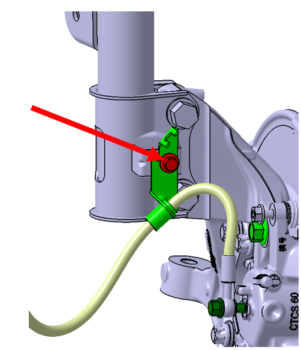
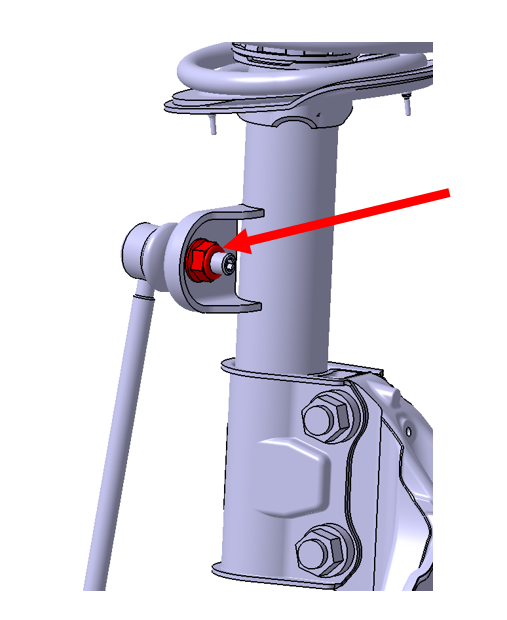
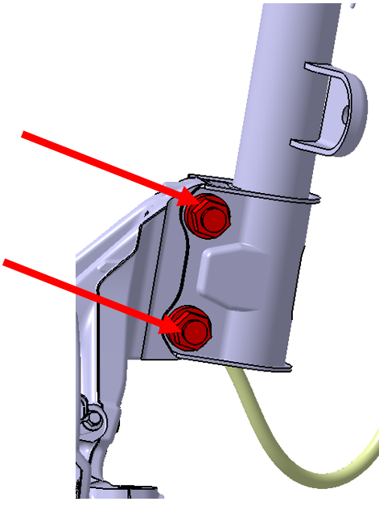

Передняя стойка в сборе
-
Снятие
-
Выполнить Подъем автомобиля, Снятие колеса. Ссылка: Колеса и шины
-
Выполнить Снятие болта крепления кронштейна тормозной трубки на передней стойке. Крутящий момент: 22 ± 2 N.m.

-
Выполнить Снятие гайки крепления Передняя стойка в сборе к передней соединительной тяге. Крутящий момент: 120 ± 12 N.m.

-
Выполнить Снятие болта и гайки крепления передней стойки к поворотному кулаку. Крутящий момент: (250 ± 20) N.m.

-
Выполнить Снятие обивки моторного отсека. Ссылка: Снятие и Установка обивки моторного отсека
-
Ослабить 3 крепежные гайки соединения верхнего конца Передняя стойка в сборе с Кузов, извлечь Передняя стойка в сборе, момент затяжки: 85 ± 5 N.m.

-
-
Установка
Порядок Установка обратен порядку Снятие; при замене на новую Передняя стойка в сборе убедиться, что цветовые метки спиральных пружин левой и правой Передняя стойка в сборе (цветовая метка расположена примерно у 2.25-го витка в нижней части пружины, бывает двух цветов — Красный и белый) совпадают.